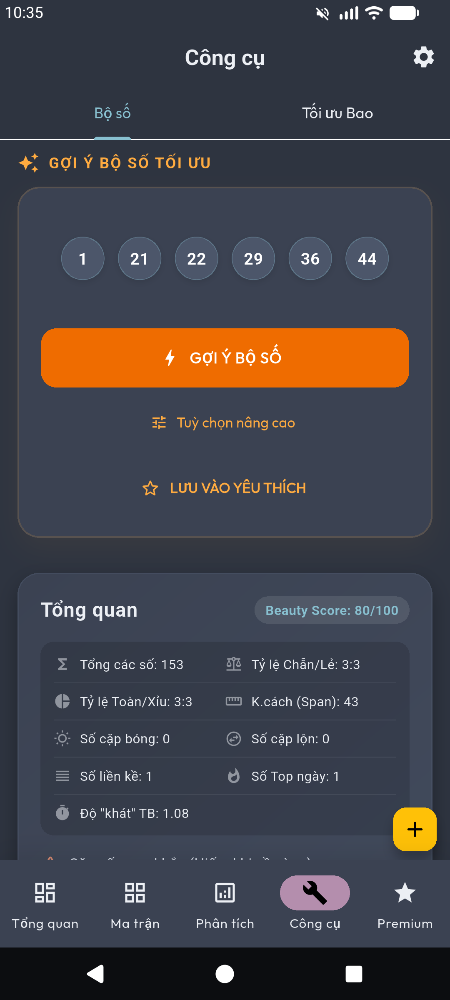

Priority Access
Trải nghiệm sự mượt mà tuyệt đối. Yêu cầu của bạn luôn được xử lý đầu tiên trên hệ thống server hiệu năng cao.
Băng thông không giới hạn
Người dùng miễn phí thường phải chờ đợi giữa các lần Kiểm tra chất lượng hoặc Gợi ý bộ số. Với Premium, rào cản này hoàn toàn biến mất.

100% Unlimited
Ưu tiên xử lý Server
Khi có hàng ngàn người dùng cùng truy cập, yêu cầu từ tài khoản Premium sẽ được đưa vào hàng đợi ưu tiên (Priority Queue). Thời gian phản hồi giảm đến 70% so với tài khoản thường.
* Lưu ý: Tốc độ thực tế có thể phụ thuộc vào kết nối mạng của thiết bị, nhưng phía server luôn cam kết tài nguyên tối đa cho bạn.